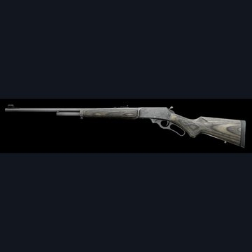
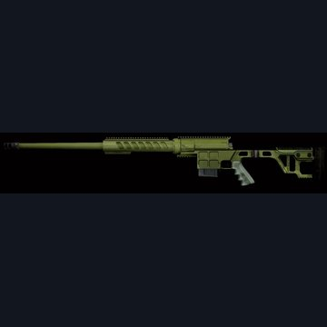
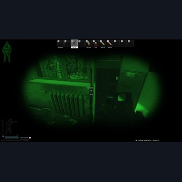
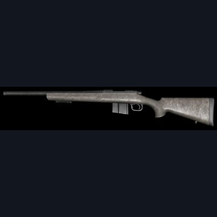
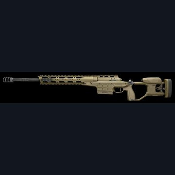

Repères de la famille
Dix fusils de précision à verrou : dix armes qui ne se rechargent pas entre deux tirs et dont la cadence publiée, de 30 à 100 coups par minute, dit tout de l’usage. Les dix partagent la même distance efficace publiée — mille mètres — et se répartissent sur cinq calibres : 7,62 x 51 mm NATO pour trois d’entre elles, 7,62 x 54 mm R pour trois autres, puis le 8,6 x 70 mm, le .366 TKM et le 7,84 x 49 mm.
21 à 55
Ergonomie. La famille est peu maniable, et c’est normal : ces armes sont construites pour la précision, pas pour la vitesse de manipulation. Le DVL-10 culmine à 55, le Remington Model 700 à 49.
111 à 468
Recul vertical. Le DVL-10 affiche 111, l’ORSIS T-5000 141, et le bas de la famille atteint 468. Un recul de cette ampleur transforme chaque tir en décision de repositionnement.
1 000
Distance efficace. Mille mètres pour les dix armes, une valeur qui décrit le canon et la cartouche, pas la précision d’un tir en conditions de raid.
Le coût, c’est l’optique. Le catalogue compte vingt-quatre lunettes telescopiques et dix-huit lunettes d’assaut, avec leurs prix de base. Une lunette à usage précis coûte plus cher que plusieurs armes de la famille : c’est le premier poste du budget d’un tireur de précision.
Le catalogue de la famille
Les dix fusils de précision à verrou de l’export, avec leurs mesures à configuration de base.
| Image | Arme | Calibre | Ergonomie | Recul vertical | Recul horizontal | Cadence (c/min) | Distance efficace (m) | Modes de tir | Munitions | Presets |
|---|---|---|---|---|---|---|---|---|---|---|
 | Carabine à levier de sous-garde Marlin MXLR .308 ME | 7,84 x 49 mm | 34 | 182 | 376 | 100 | 1000 | Semi-automatique | 2 | 1 |
 | Fusil de précision à verrou Accuracy International AXMC .338 LM | 8,6 x 70 mm | 21 | 468 | 972 | 30 | 1000 | Semi-automatique | 4 | 2 |
 | Fusil de précision à verrou Lobaev Arms DVL-10 7,62 x 51 mm | 7,62 x 51 mm NATO | 55 | 111 | 585 | 30 | 1000 | Semi-automatique | 8 | 4 |
 | Fusil de précision à verrou Molot Arms VPO-215 "Gornostay" .366 TKM | .366 TKM | 41 | 200 | 486 | 30 | 1000 | Semi-automatique | 4 | 1 |
 | Fusil de précision à verrou Mosin 7,62 x 54 mm R (infanterie) | 7,62 x 54 mm R | 30 | 288 | 877 | 30 | 1000 | Semi-automatique | 9 | 3 |
 | Fusil de précision à verrou Mosin 7,62 x 54 mm R (sniper) | 7,62 x 54 mm R | 30 | 288 | 877 | 30 | 1000 | Semi-automatique | 9 | 6 |
 | Fusil de précision à verrou ORSIS T-5000 7,62 x 51 mm | 7,62 x 51 mm NATO | 35 | 141 | 567 | 30 | 1000 | Semi-automatique | 8 | 1 |
 | Fusil de précision à verrou Remington Model 700 7,62 x 51 mm | 7,62 x 51 mm NATO | 49 | 199 | 670 | 30 | 1000 | Semi-automatique | 8 | 8 |
 | Fusil de précision à verrou SV-98 7,62 x 54 mm R | 7,62 x 54 mm R | 28 | 250 | 711 | 30 | 1000 | Semi-automatique | 9 | 2 |
 | Fusil de précision à verrou Sako TRG M10 .338 LM | 8,6 x 70 mm | 25 | 428 | 924 | 30 | 1000 | Semi-automatique | 4 | 3 |
Le Mosin apparaît en deux entrées distinctes, une version infanterie et une version sniper : ce sont deux objets différents dans l’export, avec des mesures différentes.
Presets publiés
Trente-et-un presets sont rattachés aux dix armes de cette famille. Sur une arme à verrou, le preset touche surtout l’optique et la crosse : l’ergonomie progresse, la précision se stabilise, et le poids augmente.
| Preset | Ergonomie | Recul vertical | Recul horizontal | Précision (MOA) | État |
|---|---|---|---|---|---|
| Fusil de précision à verrou Accuracy International AXMC .338 LM PM II 5-25x56Fusil de précision à verrou Accuracy International AXMC .338 LM | -19.5 | 214 | 445 | 0.76 | preset publié |
| Fusil de précision à verrou Lobaev Arms DVL-10 7,62 x 51 mm FF 4-16Fusil de précision à verrou Lobaev Arms DVL-10 7,62 x 51 mm | 38.5 | 55 | 290 | 0.62 | preset publié |
| Fusil de précision à verrou Lobaev Arms DVL-10 7,62 x 51 mm Jusqu'à l'aubeFusil de précision à verrou Lobaev Arms DVL-10 7,62 x 51 mm | 38.5 | 55 | 290 | 0.62 | preset publié |
| Fusil de précision à verrou Lobaev Arms DVL-10 7,62 x 51 mm SaboteurFusil de précision à verrou Lobaev Arms DVL-10 7,62 x 51 mm | 48.5 | 59 | 313 | 0.93 | preset publié |
| Fusil de précision à verrou Mosin 7,62 x 54 mm R (infanterie) CarbineFusil de précision à verrou Mosin 7,62 x 54 mm R (infanterie) | 26 | 196 | 597 | 2.78 | preset publié |
| Fusil de précision à verrou Mosin 7,62 x 54 mm R (infanterie) ObrezFusil de précision à verrou Mosin 7,62 x 54 mm R (infanterie) | 45 | 265 | 807 | 6.57 | preset publié |
| Fusil de précision à verrou Mosin 7,62 x 54 mm R (sniper) ATACR 7-35 x 56Fusil de précision à verrou Mosin 7,62 x 54 mm R (sniper) | 1 | 137 | 418 | 1.68 | preset publié |
| Fusil de précision à verrou Mosin 7,62 x 54 mm R (sniper) CarbineFusil de précision à verrou Mosin 7,62 x 54 mm R (sniper) | 16 | 196 | 597 | 2.78 | preset publié |
| Fusil de précision à verrou Mosin 7,62 x 54 mm R (sniper) ObrezFusil de précision à verrou Mosin 7,62 x 54 mm R (sniper) | 44 | 264 | 802 | 6.91 | preset publié |
| Fusil de précision à verrou Mosin 7,62 x 54 mm R (sniper) Obrez MFusil de précision à verrou Mosin 7,62 x 54 mm R (sniper) | 42 | 264 | 802 | 6.91 | preset publié |
| Fusil de précision à verrou Mosin 7,62 x 54 mm R (sniper) PU 3,5xFusil de précision à verrou Mosin 7,62 x 54 mm R (sniper) | -3 | 178 | 541 | 1.68 | preset publié |
| Fusil de précision à verrou Remington Model 700 7,62 x 51 mm AAC SDFusil de précision à verrou Remington Model 700 7,62 x 51 mm | 1.5 | 107 | 360 | 1.17 | preset publié |
| Fusil de précision à verrou Remington Model 700 7,62 x 51 mm AICSFusil de précision à verrou Remington Model 700 7,62 x 51 mm | 56 | 121 | 407 | 1.17 | preset publié |
| Fusil de précision à verrou Remington Model 700 7,62 x 51 mm ARCHFusil de précision à verrou Remington Model 700 7,62 x 51 mm | 43 | 119 | 401 | 1.17 | preset publié |
| Fusil de précision à verrou Remington Model 700 7,62 x 51 mm MRSFusil de précision à verrou Remington Model 700 7,62 x 51 mm | 44.14999999999999 | 100 | 336 | 1.17 | preset publié |
| Fusil de précision à verrou Remington Model 700 7,62 x 51 mm MescaleroFusil de précision à verrou Remington Model 700 7,62 x 51 mm | 8.5 | 84 | 282 | 1.17 | preset publié |
| Fusil de précision à verrou Remington Model 700 7,62 x 51 mm PROFusil de précision à verrou Remington Model 700 7,62 x 51 mm | 65.9 | 121 | 407 | 1.17 | preset publié |
| Fusil de précision à verrou Remington Model 700 7,62 x 51 mm Vudu 1-6x24Fusil de précision à verrou Remington Model 700 7,62 x 51 mm | 37.75 | 127 | 426 | 1.2 | preset publié |
| Fusil de précision à verrou SV-98 7,62 x 54 mm R OVFusil de précision à verrou SV-98 7,62 x 54 mm R | 68.65 | 186 | 530 | 0.55 | preset publié |
| Fusil de précision à verrou Sako TRG M10 .338 LM Mark 5HD 5-25x56Fusil de précision à verrou Sako TRG M10 .338 LM | -1 | 291 | 627 | 0.93 | preset publié |
| Fusil de précision à verrou Sako TRG M10 .338 LM PM II 1-8 x 24Fusil de précision à verrou Sako TRG M10 .338 LM | 28.9 | 344 | 742 | 1.07 | preset publié |
La précision est exprimée en minutes d’angle. À mille mètres de distance efficace, une minute d’angle correspond à un groupement d’environ dix-sept centimètres : la valeur compte moins que le nombre de carts que l’on peut tirer avant que la cible ne bouge.
Acquisition et disponibilité
Aucune des dix armes de cette famille n’est vendue en magasin dans l’instantané. Elles s’acquièrent en raid, par tâche ou au marché, avec des prix qui dépassent couramment le million de roubles une fois l’optique ajoutée.
Aucune vente en magasin relevée pour cette famille dans l’instantané consulté.
Comment s’équiper
- La munition décide du match. Le 7,62 x 51 mm NATO et le 7,62 x 54 mm R montent dans les trois armes les plus répandues de la famille. Leur pénétration dépend entièrement de la cartouche chargée : le même fusil de précision franchit une classe 5 ou s’arrête dans une classe 3 selon le projectile. La page balistique donne la règle exacte.
- Comparer les cinq calibres plutôt que les armes. Cinq calibres pour dix armes signifie que le choix réel se joue à deux ou trois armes par calibre. Le tableau croisé des calibres est plus utile ici que le classement des modèles.
- Compter les cartouches, pas les mètres. Une cadence de 30 à 100 coups par minute signifie qu’un duel se gagne sur le premier tir ou se perd. L’optique, le bipied et la discipline de position comptent autant que le canon.
Sources et limites
Les mesures viennent de l’export communautaire du 18 novembre 2026. La distance efficace de mille mètres est une valeur publiée par le catalogue, pas une garantie de précision : les valeurs de groupement viennent des presets et restent des mesures de configuration, dans des conditions de tir qui ne sont pas celles d’un raid.
- Tarkov.dev — catalogue des armes et de leurs presetsDonnées communautaires
- Tarkov.dev — items, équipement, munitions et skills (PvP ; autres modes via le catalogue)Données communautaires
- Tarkov.dev — catalogue officiel des exports JSONDonnées communautaires
- Escape from Tarkov WikiWiki communautaire
- KappaGuide — outils, cartes et guidesOutil communautaire